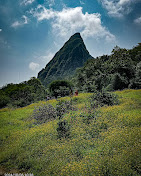
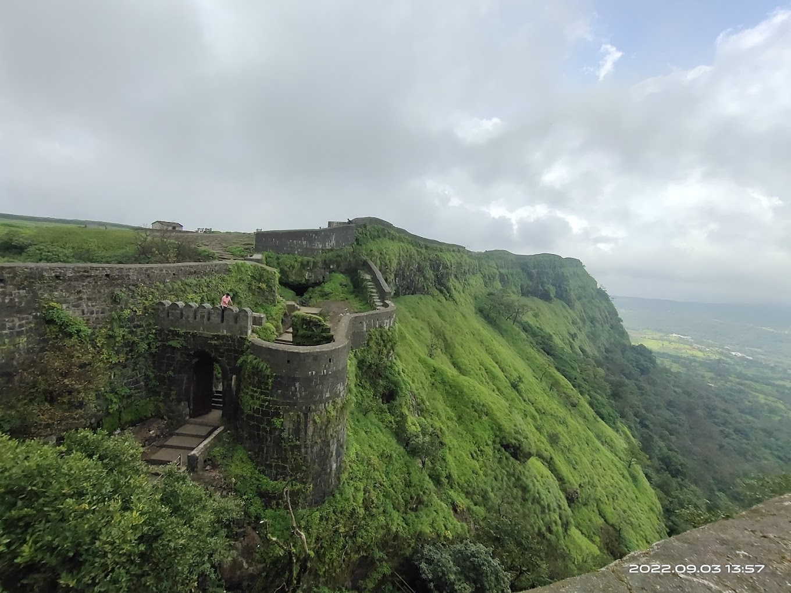
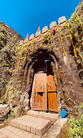
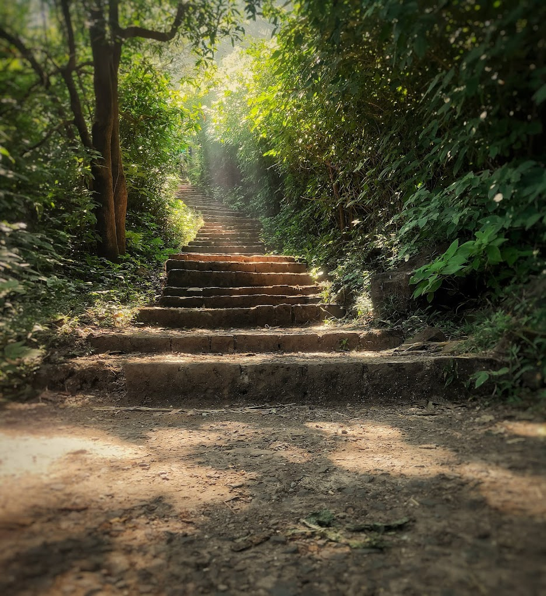

कोरिगड किल्ला
Location : Click Here For Google Map
- माहिती
- कोरिगड किल्ला महाराष्ट्र राज्याच्या पुणे जिल्ह्यात स्थित एक ऐतिहासिक किल्ला आहे. हा किल्ला लोहगड किल्ल्याजवळ आहे आणि ते एक अतिशय सुंदर ट्रेकिंग डेस्टिनेशन म्हणून ओळखले जाते. किल्ल्याचे शिखर समुद्रसपाटीपासून सुमारे ९०० मीटर उंच आहे.
किल्ल्याची बांधणी १६व्या शतकात झाली आणि तो मराठा साम्राज्याच्या किल्ल्यांमध्ये एक महत्त्वपूर्ण गड होता. किल्ल्याच्या कडेकडेच्या भिंती, जलाशय आणि गडाच्या मुख्य दरवाजाची रचना एक रणनीतिक संरचना म्हणून किल्ल्याचे संरक्षण करत होती. किल्ल्याच्या शिखरावरून दिसणारा दृश्य अत्यंत सुंदर आणि लुभावणारा आहे.
आजकाल, कोरिगड किल्ला एक लोकप्रिय ट्रेकिंग स्पॉट आहे आणि ट्रेकर्स आणि साहसी प्रेमी या किल्ल्याला भेट देतात. किल्ल्याच्या आसपासच्या परिसरात सुंदर नैसर्गिक सौंदर्य आणि शांतता आहे, ज्यामुळे हे एक आवडते स्थान बनले आहे.
Explore the historical beauty



